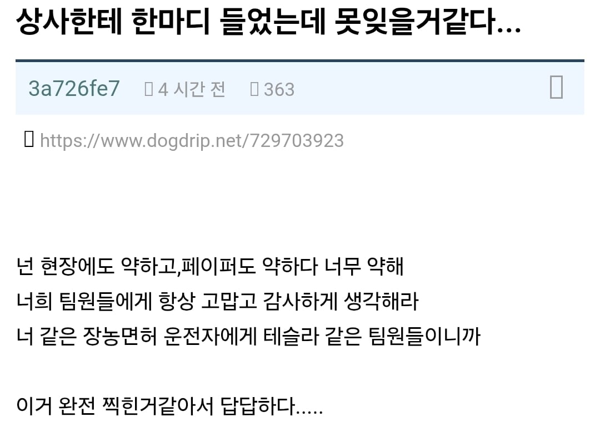
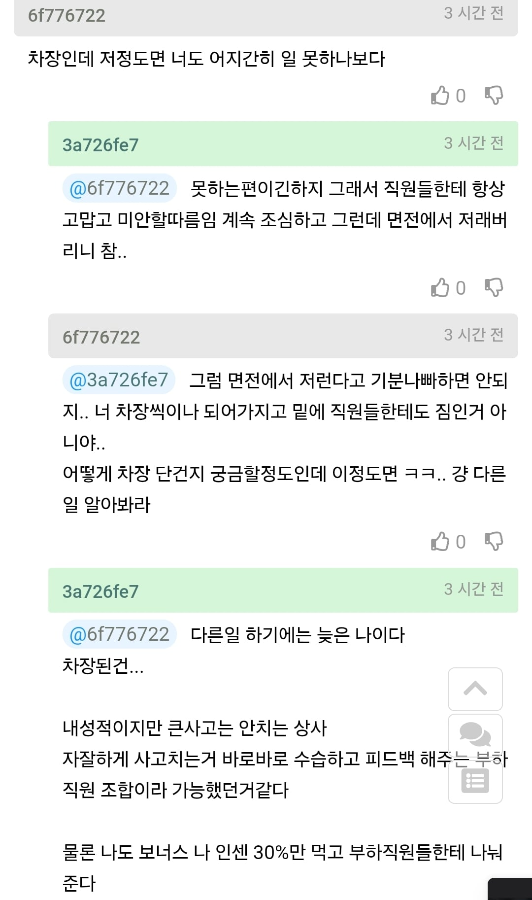
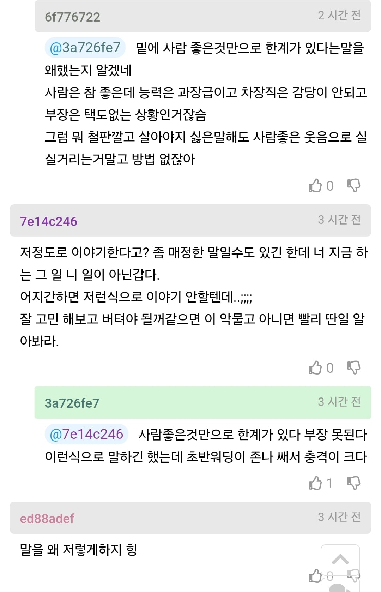
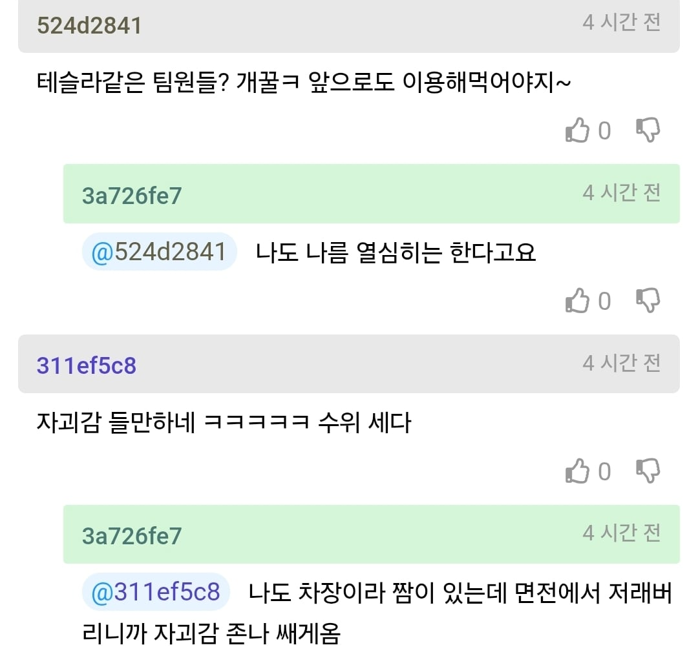

팀장은 장롱면허 운전자
팀원들은 자유주행 테슬라




팀장은 장롱면허 운전자
팀원들은 자유주행 테슬라
이게 회사야 북파공작원이야
다들 저때되면 아...하는거지
내부영업이 최고의 영업이엇단걸
짬차고 사고안치면 자동진급인줄 알고잇다가
현실의 벽을 느끼는거고
그래도 사람은 좋아서 밑에 직원들 발목 안잡자너 한잔해~~
사실 차장에서 더이상 진급할생각 없으면 그대로 하던가라는 표현이고 이제 다음차장세대 오면 짐쌀 준비도 하라는거지 뭐
좋은사람이네. 저런사람도 있어야지
나는 감정이없는 사이코패스랄까 이딴 새끼들만있으면 아니그건그렇게했어야죠 바락바락 키배는뜨는데 막상 자기가 그런상황닥치면 아무것도못하고 어버버하다가 자기잘못아닌척 은근슬쩍 넘어가려함
부장달려면 좀 잘하던가 아니면 자기 진급할때 나가리될거란 얘기지 뭐
현장에도 약하고 페이퍼도 약하다는 무슨 오펜스와 디펜스가 안 된다 수준의 드립이냐
????: 한화는 못 하는 것이 두 가지 있어요
"잘하고 있어. 다 잘하는데... 우리가 지금 안 되는 게 딱 두 개야. 공격(오펜스)이랑 수비(디펜스)."
박한 감독
저 사람이 직접 직원에게 일 지시하고 관리 한거면 오히려 팀장 가야하는 인재이고
걍 운좋에 들어온 직원이 알아서 찾아서 잘 하는 스타일이면 걍 노답
팀장은 조율만 하고 일은 팀원이 일하게 만드는게
좋은 팀장 아니였어? ㅋㅋ
근데 사람이라도 좋으면 됐지
생각보다 저기 상사가 더 이상한사람일 확율이 높더라
밑바닥에서 차장다는거 개ㅈ으로 다는거 아니더라
요즘이 어떤세상인데 나참
퇴사하면서 성폭력신고 같은거 들어가면 복잡해진다
이거는 라인을 잘 못 탄거 아님 상사가 차장으로 올려주고 싶은 사람 따로 있었는데 저 사람이 올라가서 그냥 갈구는 거 같은데 특별히 사고난거 아닌 다음에야 이렇게 강하게 말하나?
나네...
개폐급인건 맞는데 일을 못하지 사람이 병신인건 아닌거같음
회사나 혹은 법적으로 강제성을 가지고 시킨것도 아니고 자진해서 본인의 인센을 나눈다는건 아무나 할수있는건 아님
머리로는 알아도 실천하는건 분명 힘들고 내 스스로 내도덕적 기준에 반해서 본인의 밥그릇을 덜어냈다는건데
이건 메타인지가 좋은거임
게다가 회사가 꾸준히 밥을 주는 이유도 일의 효율이 떨어져도 사람들간의 라포가 좋거나
혹은 만년 차장 자리로 인해서 밑에 사람들이 눈치 안보고 활발히 움직일수 있는 팀원이 꾸려지는
그림을 원하는거 일수있음
신규 사업을 진행하고싶은데 머가리 굳은 팀 말고 좀 신선하고 미꾸라지 같은 팀한테 업무 주고 싶은데... 할때
생각나는게 이 무능한 차장 밑에 붙어있는 빠릿빠릿한 미꾸라지 팀들을 찾게되는거 같은데...
어찌보면 충분히 매력적인 팀같은데?? 랜덤가챠 뽑는 감각으루...
김보성 나오면 일단 으리으리한 드라마나 으리으리한 영화인것을 우리는 예상하는것처럼 말이지...
저 개붕이는 김보성 영화같은 B급 갬성이 있다 이말이여
김부장!! 너는 일을 하는 게 아니야
난 지금 제목이 더 열받아
부하직원들이 크게 불만 없으면 된거임
능력이 다가 아님 팀분위기만 좋으면 괜찮은거임
내가 봤울 때 부하직원들이랑 은 사이 존나 좋을듯
저 윗 사람 눈에 존나게 안차는게 문제
자기객관화되있고 아랫사람들한테 잘한다는거보면
아랫사람들이 불만 가지지않는이상 괜찮은거같은데?
보통 진짜 못하는새끼들은 나는 솔직히 잘하는데 씨발 이러더라고
밑에 애들이 똘똘해서 너 살았다가 아니라 밑에 직원들에게도 먹혀서 조만간 나간다는 말을 해준거같은데
누군가 직보고 하는 상황 아니고서야 밑에 애들이 자율주행이라 생각할 수 없잖아
저때부터는 회사생활에서 부하직원 관리뿐 아니라. 정치질은 기본이고 공작, 납치 암살같은거 안하면 올라가기 힘들긴 함